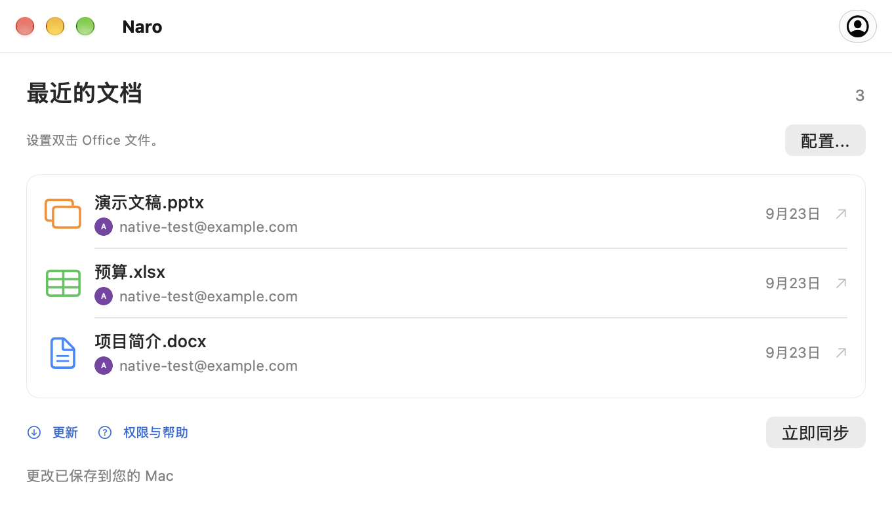

连接您的 Google 帐户。
通过浏览器登录，然后在其帐户设置中将 Naro 设置为 Office 文件的默认应用程序。
Office 文件，在 macOS 上连接
Naro 是一款 macOS 应用程序，可在 Google 文档、表格和幻灯片中打开您的 Word、Excel 和 PowerPoint 文件，然后在应用程序在线运行时将保存的更改同步回您的 Mac。
适用于 Apple Silicon · macOS 26 或更高版本

熟悉的开始
你通常的双击，谷歌的编辑器在另一边。
通过浏览器登录，然后在其帐户设置中将 Naro 设置为 Office 文件的默认应用程序。
Naro 将文件上传到您的 Google 云端硬盘并打开匹配的编辑器。如果有多个帐户，请先选择头像。
当 Naro 在线运行时，它会检查 Google 保存的更改并将其写回本地，并保留备份。
三位编辑。一个应用程序。
文档、电子表格和演示文稿。每个文件最多 100 MB。

从本地文档到 Google 文档。
DOC · DOCX
在 Google 表格中打开电子表格。
XLS · XLSX
将您的演示文稿放入 Google 幻灯片中。
PPT · PPTX连接您要用于文档的 Google 帐户。 Naro 使用您的姓名、电子邮件和个人资料图片来显示连接的帐户并帮助您选择合适的帐户。 Naro 永远不会收到您的 Google 密码。
当您使用 Naro 打开本地 Office 文件时，它会将该文件上传到您的 Google 云端硬盘，并在浏览器中打开 Google 编辑器。驱动器访问允许 Naro 检索保存的更改并将其同步回您的 Mac。访问权限仅限于 Naro 创建的或明确与其共享的文件，而不是您的整个云端硬盘。
文档直接在 Mac 和 Google 之间传输。 Naro 没有开发人员操作的服务器来接收您的文档。登录令牌保留在 macOS 钥匙串中。
随时提供帮助
第一个文件的简短指南，
您的下一个帐户，一切都同步。
实用信息
是的。 从 GitHub 版本下载 Naro，或者使用 Homebrew 安装它：
brew install --cask plexideas/tap/naro。该下载没有 Apple Developer ID 签名，因此 macOS 可能会要求您明确允许首次启动。
编辑发生在浏览器中的 Google 文档、表格或幻灯片中。 Naro 可以处理从 Finder 打开文件、选择帐户以及将 Google 保存的更改带回您的 Mac。
Naro 保留了两个版本，并询问选择哪一个继续。它还在替换文档之前进行本地备份。保持 Naro 运行并连接到互联网以进行同步。
兼容性取决于 Google 的 Office 编辑器。复杂的格式、宏和其他高级功能可能不会保留。如果 Google 升级较旧的 DOC、XLS 或 PPT 文件，Naro 会将现代格式的副本与原始文件一起保存。原始文件链接不会跟踪将文件转换为单独的 Google 原生文档。
Naro 支持运行 macOS 26 或更高版本的 Apple Silicon Mac。该应用程序可以检查 GitHub Releases 是否有更新。您可以从更新窗口选择何时下载、安装和重新启动。